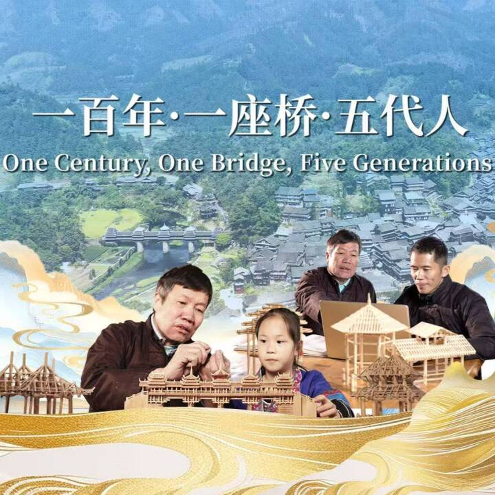

TIER S · 爆款
08:02
👑 江寻千 (九月) · 燕京八绝
《不是40万？？？你这衣服黄金做的啊！坏了，还真是》
"Through extreme macro details, this piece centers on Huasi Xiangqian—the pinnacle of imperial craftsmanship."
"Through extreme macro details, this piece centers on Huasi Xiangqian—the pinnacle of imperial craftsmanship."

TIER A · 营造 04:51"Held together by nothing but wood locking into wood, one Dong family has guarded this marvel for five generations."
 TIER A · 古兵器
15:29
TIER A · 古兵器
15:29
"A Four-Season Ode to Ancestral Craftsmanship: composite bow making across winter, spring, summer, and autumn."
 TIER A · 纪实
24:22
TIER A · 纪实
24:22
"Jasmine opens after dark, so the growers live by the moon. For three years, following the hands behind the scent."
"Journey through two millennia of Taoist cultivation, where stillness births wisdom, and silence speaks eternity."